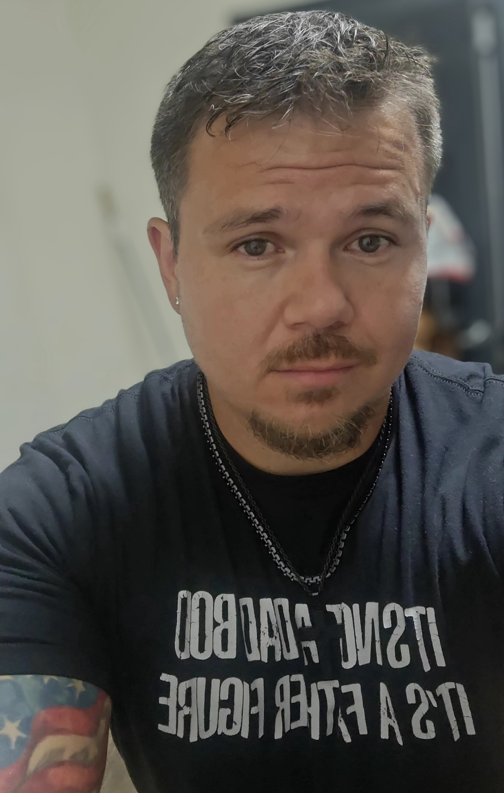

Craig Baumann
U.S. Army veteran, self-taught developer, and the person behind WebOps Studio. Based in Minnesota, working with clients across the country.
How I got here
I didn't take the traditional path. No design school, no computer science degree. I learned by building — taking on real projects, breaking things, fixing them, and refining until the work held up.
After the Army, that same mindset carried into web development: clear execution, attention to detail, and a focus on actually finishing the job. WebOps Studio is the result — hand-coded websites and full-stack applications, built with care.
How I work
Every project starts with a conversation. I want to understand what you're building, who it's for, and what success looks like before I write a single line of code. The process is honest, structured, and direct.
-
01
Discovery
We talk about your goals, audience, and what the site needs to do. I'll ask the questions that surface the real requirements.
-
02
Design
I sketch the structure and design direction. You see it before I build it, so we agree on the visual approach early.
-
03
Build
I hand-code the site — mobile-first, performance-focused, clean code under the hood. No bloat, no shortcuts.
-
04
Review
You review the build, and we refine the details through included revision rounds. Real feedback, real changes.
-
05
Launch
The site is tested, deployed, and handed off with everything you need to manage it going forward.
What you can expect
A few things I commit to on every project:
- Direct communication with the person actually building your site — no agency middlemen.
- Clean, scalable code without unnecessary bloat.
- A collaborative process centered on your goals, not mine.
- Two rounds of revisions included in every project.
- Careful execution and accountability from start to finish.
The tools
For static sites: HTML, CSS, and JavaScript. For full applications: Next.js, TypeScript, and Supabase. I pick the right tool for the project and avoid unnecessary complexity.
Craig went above and beyond. He didn't just build us a website, he brought our mission to life. We get compliments on it constantly.— Guardian 4 Heroes Team
Ready to talk?
If you've got a project in mind, I'd like to hear about it. Every project starts with a conversation.